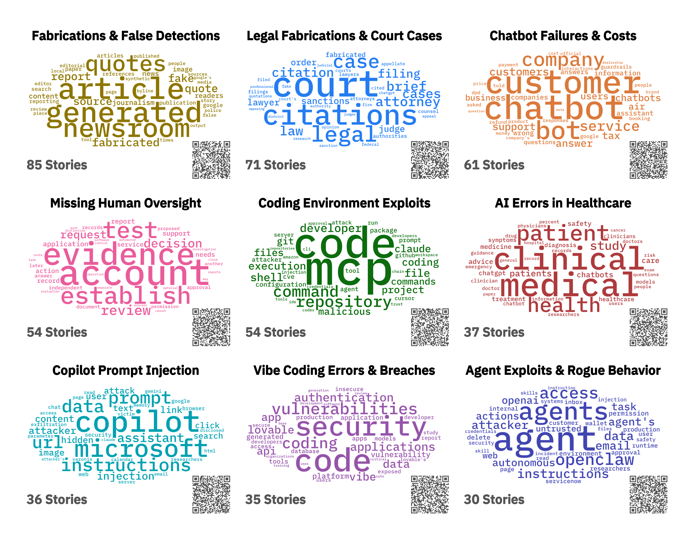

Epilogue: Thoughts for the Next Gen
As reviewed throughout this guide, AI is radically redefining the nature of scientific inquiry — for better and for worse. This change is occurring extremely quickly, generating immense controversy, and producing a variety of conflicting messages about the future. We’ve been told that AI may one day cure cancer1, and one day destroy society2. That AI may one day make us better at our jobs3, and one day take those jobs4. And that AI may one day expand our intellectual capacities5, and one day leave us unable to think for ourselves6. As we watched frontier AI labs form increasingly large teams of humans and AI agents to catalyze such developments, we formed our own collaboration dedicated to understanding their implications. The result is this 2027 UF Guide to AI in Science: an ethnographic-style summary of our top resources, takeaways, and disagreements.
| # | Statement | Votes |
|---|---|---|
| 1 | The goal of science is human understanding, not just correct answers produced by machines. | 92% |
| 2 | As fewer students review literature by hand, fewer people truly read the scientific record. | 67% |
| 3 | Working well with many humans and AI agents is now a core scientific skill, yet science rarely teaches it. | 58% |
| 4 | Leaning on AI may weaken critical thinking and cause researchers to miss more errors. | 58% |
| 5 | Telling real research from AI slop is getting harder, so readers must check sources carefully. | 58% |
| 6 | Humans already cannot review science fast enough, and floods of AI output make it worse. | 42% |
| 7 | Researchers who use AI well gain a competitive edge, which changes how science competes. | 42% |
| 8 | Frontier AI labs now outspend and out-compute universities, shifting who holds power in science. | 42% |
| 9 | AI speeds up making and reading low-quality work, so science may need to change its practices. | 42% |
| 10 | Automated pipelines could run whole studies with little human input, so scientists must define what human insight still adds. | 33% |
As our collaboration comes to an end, we provide a list of our top 10 takeaways (Table 1) and turn our guide to the next generation. Next semester, an undergraduate honors seminar will study and build upon this guide. For example, two undergraduates mocked up a thematic analysis of hundreds of error reports posted to Vibe Graveyard7, providing links to resources for the next generation to study more deeply (Figure 1). Seminar participants also identified a variety of topics that we recommend exploring further: AI-text watermark regulations8 and workarounds9, AI-assisted cheating scandals10, AI replacing human relationships11, and so on. We hope the next generation of academics will find our initial progress helpful. And regardless of whether this future generation includes humans, artificial agents, or some mix, we emphatically remind them of the principles that guided the development of this seminar: we are stronger together, as collaborators, as friends, and as members of a society that became so advanced it created artificial replications of its intelligence.
